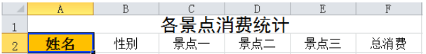
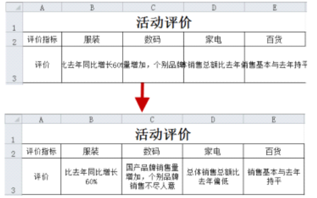
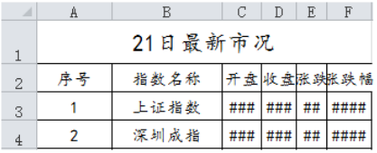
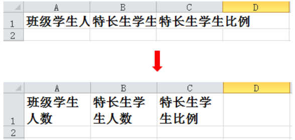
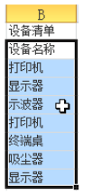
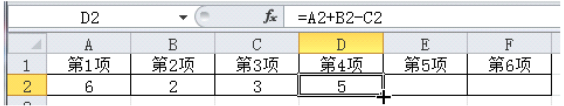
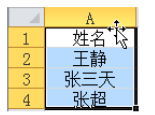
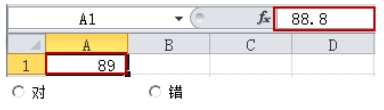
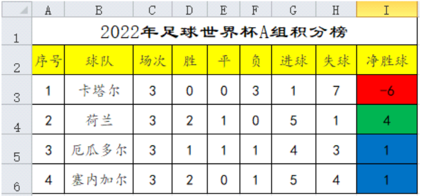

1.在 Excel 2010 中，使用 “查找” 命令，只能查找当前工作表中的数据。（ ）
Excel 2010 的“查找”命令可以设置查找范围为整个工作簿，并非只能查找当前工作表。
2.如图所示，在 Excel 2010 中，要将 A1 单元格的格式快速应用到其他单元格中，可以使用（格式刷）命令。（ ）

格式刷可以快速将一个单元格的格式复制并应用到其他单元格或单元格区域。
3.在 Excel 2010 中，可以通过 “合并后居中” 功能将上图调整为下图的效果。（ ）

实现图中效果使用的是自动换行功能，不是合并后居中。
4.在 Excel 2010 中，对已合并的单元格，再执行一次 “” 命令，可以将合并的单元格拆分开。（ ）
对已合并的单元格再次执行“合并后居中”命令，可取消合并，拆分单元格。
5.在 Excel 2010 中，要让 C 列到 F 列的数值正常显示，可以通过设置单元格的数字格式来实现。（ ）

图中C到F列显示为###是因为列宽不足，应调整列宽，不是设置数字格式。
6.用于编辑表格的 Excel 软件属于应用软件。（ ）
Excel是专门用于数据处理与表格编辑的应用软件。
7.杨老师使用 Excel 统计班级期中成绩时，将文件保存在了电脑桌面，实际上这是保存在了电脑的 D 盘。（ ）
桌面默认保存在系统盘（通常是C盘），不是D盘。
8.在 Excel 2010 中，可以使用填充柄功能在单元格中进行自动填充得到数据 “星期一、星期二…… 星期日”。（ ）
Excel 2010 支持星期序列的自动填充，使用填充柄可以快速生成星期一到星期日。
9.在 Excel 2010 中，要选中单元格区域 B1:D9，可以先选中 B1 单元格后按住 Ctrl 键再选中 D9 单元格。（ ）
选中连续单元格区域应按住 Shift 键，不是 Ctrl 键。
10.在 Excel 2010 中，要实现左图到右图的变化，可以将选中单元格区域的数字格式改成日期中的 “2001 年 3 月 14 日”。（ ）
左图中的日期显示为 “2020-3-1” 等短横线格式，右图显示为 “2020 年 3 月 1 日” 等中文长日期格式。在 Excel 中，通过设置单元格的数字格式为 “2001 年 3 月 14 日” 这种类型，即可实现这种显示效果的变化，而不会改变单元格内存储的实际日期值。
11.在 Excel 2010 中，要将上图中的数据变成下图的效果，可以使用 “自动换行” 命令。（ ）

图中变化是将单元格内的长文本（如 “班级学生人数”）在单元格内自动换行显示，这正是 “自动换行” 功能的作用。使用该命令后，文本会根据单元格宽度自动换行，无需手动插入换行符。
12.在 Excel 2010 中，选中单元格区域，鼠标指针状态如图所示，此时按住鼠标右键拖动，可以移动单元格区域的数据。（ ）

空心十字光标是用于选择单元格，不能移动数据。
13.在 Excel 2010 中，使用填充柄自动填充的方法完成数字填充，F2 单元格（第 6 项）中的数字是 0。（ ）

先计算 D2 单元格的值：D2=A2+B2−C2=6+2−3=5
该公式的规律是：第 n 项 = 第 (n-3) 项 + 第 (n-2) 项 - 第 (n-1) 项。
依次计算后续项：
E2（第 5 项）：B2+C2−D2=2+3−5=0
F2（第 6 项）：C2+D2−E2=3+5−0=8
因此，F2 单元格中的数字是8，而非 0。
14.在 Excel 2010 中，选中单元格区域，鼠标指针状态如图所示，此时按住鼠标左键拖动，可以移动单元格区域数据。（ ）

在 Excel 中，当选中单元格区域后，将鼠标移动到区域边框上，指针会变为十字箭头形。此时按住鼠标左键拖动，即可移动该单元格区域的数据到新的位置。
15.在 Excel 2010 中，将 A1 单元格的内容 “88.8” 显示为 “89”，可以选中单元格，将小数位数设置为 “0”。（ ）

将小数位数设置为0，Excel会自动四舍五入显示为整数，88.8会显示为89。
16.如图所示，其中 “I3” 单元格的背景颜色是蓝色。（ ）

图中I3单元格背景颜色为红色，I5、I6为蓝色，I4为绿色。